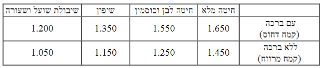

מצווה לתרום מהבצק שנועד להכנת לחם - תרומת חלה לכהן, והכהן ובני משפחתו יכינו
ממנו לחמים ועוגות ויאכלום בטהרה, כדי שיוכלו למלא את שליחותם הרוחנית ללמד
תורה לישראל. שנאמר (במדבר טו, יז-כא): "וַיְדַבֵּר ה' אֶל מֹשֶׁה לֵּאמֹר,
דַּבֵּר אֶל בְּנֵי יִשְׂרָאֵל וְאָמַרְתָּ אֲלֵהֶם: בְּבֹאֲכֶם אֶל הָאָרֶץ
אֲשֶׁר אֲנִי מֵבִיא אֶתְכֶם שָׁמָּה. וְהָיָה בַּאֲכָלְכֶם מִלֶּחֶם הָאָרֶץ
תָּרִימוּ תְרוּמָה לַה'. רֵאשִׁית עֲרִסֹתֵכֶם חַלָּה תָּרִימוּ תְרוּמָה,
כִּתְרוּמַת גֹּרֶן כֵּן תָּרִימוּ אֹתָהּ. מֵרֵאשִׁית עֲרִסֹתֵיכֶם תִּתְּנוּ
לַה' תְּרוּמָה לְדֹרֹתֵיכֶם".
הלחם שהוא עיקר מאכלו של האדם מבטא במידה רבה את אופיו המיוחד של האדם, שיש
ביכולתו לבחור, ליצור ולשכלל. שכל בעלי החיים אוכלים מאכלים טבעיים, כעשבים,
עלים, דגנים, ירקות, פירות ואף בשר, ואילו האדם אוכל לחם, שתהליך הכנתו ארוך
ומורכב ומצריך עשיית מלאכות רבות: חרישת האדמה, זריעת הדגן, קציר השיבולים,
הפרדת גרגירי הדגן מהשיבולים והפסולת על ידי דיש, זרייה ובירור, טחינת
הגרגירים לקמח, לישתו במים לעשותו בצק ואפייתו. מכל המאכלים שהאדם אוכל, תהליך
הפקתו של הלחם הוא המורכב והמתוחכם ביותר. כמו הלחם כך האדם, שכל החיות
שבעולם, בזמן קצר ובאופן טבעי לומדות כיצד להתקיים ולפרות ולרבות, ואילו האדם
נזקק ללמוד במשך שנים רבות כיצד להשיג לעצמו מזון, לבוש, דירה ולהקים משפחה.
ובתוך כך הוא לומד לרתום לשירותו את הכוחות העצומים שבטבע. יכולת הבחירה,
הלימוד, היצירה והשכלול, הם הביטוי לצלם האלוקים שבאדם.
אלא שהאדם עלול להפנות את כוחותיו לרעה, להתגאות על חבריו, לשקר ולגנוב,
להשחית ולבגוד, כדי להרבות תאוותיו. על ידי האיסור לאכול מלחם שלא הופרשה ממנו
חלה, האדם זוכר את ה' שברא את כל כוחות היצירה שלו, ונזהר שלא להשתמש בהם
לרעה. על ידי המצווה לתת את החלה לכהן, הלחם ותהליך הכנתו נעשים מקושרים
לקדושה, והאוכלים ממנו יכולים לרומם ולכוון את כוח יצירתם לטובה ולברכה. זהו
שאמרו חכמים (ויק"ר טו, ו): "כל המקיים מצות חלה כאלו ביטל עבודה זרה, וכל
המבטל מצוות חלה כאלו קיים עבודה זרה". המשמעות הרחבה של המושג 'עבודה זרה'
הוא כלל המעשים הרעים שאדם עושה עבור אלילי כספו, תאוותו וגאוותו.
עוד אמרו חכמים, שהאדם עצמו הוא 'חלתו של עולם', שהקב"ה ברא את האדמה וכל
החומרים שבה, לש אותה במי הגשמים, ומה'עיסה' שנוצרה ברא את כל הצומח והחי,
ומתוך ה'עיסה' הפריש 'חלה', וממנה ברא את האדם בצלמו, כדי שינהיג את העולם
לטובה. וכאשר אדם הראשון חטא, טימא את עצמו ואת העולם כולו. וכדי לתקן את חטאו
נצטוו ישראל להפריש חלה לכהן, ולשומרה בטהרה, כדי לזכור את ייעודם. ומצווה זו
שייכת יותר לאישה, כי בכוחה לכוון יותר את הכוחות שבאדם ולתקן בכך את החטא
(עי' ברא"ר יד, א; יז, ז-ח).
אמרו חכמים (שם א, ד): "בזכות שלושה דברים נברא העולם: בזכות חלה, ובזכות
מעשרות, ובזכות ביכורים". משום ששלוש המצוות הללו נקראות 'ראשית', והן מזכירות
לנו שהמגמה הראשונה של הבריאה היא לגלות את הקדושה בתוך העולם. ביכורים
ותרומות ומעשרות ניתנים מתוך הפירות שגדלים בדרך הטבע. בזכות הביכורים,
מתקשרים אל החזון הכללי של עם ישראל (לעיל ז, טו), ובזכות תרומות ומעשרות,
הברכה מתפשטת לשדות וליבולים (לעיל ז, יג). החלה ניתנת מתוך מעשי ידיו של
האדם, ובזכות כך הוא זוכה שהברכה תשרה במעשה ידיו ובביתו, שנאמר (יחזקאל מד,
ל): "וְרֵאשִׁית עֲרִסוֹתֵיכֶם תִּתְּנוּ לַכֹּהֵן - לְהָנִיחַ בְּרָכָה אֶל
בֵּיתֶךָ".
ב - ייחודה של החלה
החלה היא אחת מעשרים וארבע המתנות שנצטוו ישראל לתת לכהנים, כדי שיהיו פנויים
מעול הפרנסה ויוכלו למלא את שליחותם המקודשת, לחנך את ישראל לתורה ומצוות
ומידות טובות. מבין כל המתנות היתה למתנת ה'חלה' חשיבות מיוחדת, שממנה הכינו
הכוהנים את הלחם שהוא עיקר מזונו של האדם. בנוסף לכך, על ידי מצוות חלה נוצר
קשר רצוף בין הישראלים לכהנים. שלא כמו תרומות ומעשרות מהפירות והדגן, שהיו
בעלי השדות מחלקים בשדות בכמויות גדולות מספר פעמים בשנה; החלה היתה ניתנת
מידי יום ביומו, מידי כל אשה ישראלית לשכנתה הכוהנת, וכך היו כל ישראל מתקשרים
בעת הכנת לחמם לערכי הקודש.
בעת הפרשת החלה - החלה מתקדשת כתרומה, שאסור לישראלים וללוויים לאוכלה,
והכוהנים צריכים להקפיד לאוכלה בטהרה, שנאמר (במדבר טו, כ): "כִּתְרוּמַת
גֹּרֶן כֵּן תָּרִימוּ אֹתָהּ". לפיכך, הישראלים צריכים להיזהר מאוד שלא
לטמאה, שאם תיטמא תיאסר באכילה. והיה בכך קושי, מפני שהכלל הוא שהפירות יכולים
להיטמא רק לאחר שהרטיבום במים כדי לשוטפם או כדי להכינם למאכל או לצורך אחר,
אבל פירות שעדיין לא הורטבו, אינם יכולים לקבל טומאה. לפיכך אין בעיה לישראלים
להפריש תרומות מהפירות, כי מפרישים אותן מפירות שלא הורטבו. אבל במצוות החלה
מתחייבים רק לאחר שמערבים את הקמח במים ועושים ממנו בצק. ואם מי שמכין את הבצק
טמא, הרי שהוא מטמא בידיו את הבצק וגורם לחלה שתהיה טמאה, ובכך הוא מבזה את
המצווה וגורם להפסד החלה. לפיכך, כאשר האשה שלשה את הבצק היתה טמאה לנידתה או
לשאר טומאות, היתה קוראת לשכנתה הכוהנת שתלוש עבורה את הבצק, והישראלית בירכה
על הפרשת החלה, והכוהנת נטלה את חלתה (ירושלמי חלה ג, א). באופן זה הקשר בין
משפחות הישראלים ומשפחות הכהנים היה גובר מאוד.
מהתורה אין לחלה שיעור, אולם חכמים תקנו שכל אדם יפריש לכל הפחות אחד חלקי
עשרים וארבע מהעיסה (כ-4%), כדי שתהיה לנתינתו חשיבות. ונחתום שמתפרנס מאפיית
לחם, הואיל ועינו צרה במתנה שהוא צריך לתת לכהן, ייתן לכל הפחות אחד חלקי
ארבעים ושמונה (כ-2%). וכיוון שבדרך כלל עיסתו גדולה, גם באחד חלקי ארבעים
ושמונה יש שיעור של מתנה יפה. כאשר העיסה נטמאה בשוגג, גם אדם בביתו יפריש
כשיעור הנמוך, אחד חלקי ארבעים ושמונה, הואיל וממילא הכהן אינו יכול לאוכלה
(משנה חלה א, ט; ב, ז; ירושלמי ב, ג; שו"ע יו"ד שכח, א).
ג - המצווה בארץ ובחוץ לארץ
מצוות חלה, כמו מצוות תרומות ומעשרות, תלויה בארץ, שנאמר (במדבר טו, יח):
"בְּבֹאֲכֶם אֶל הָאָרֶץ אֲשֶׁר אֲנִי מֵבִיא אֶתְכֶם שָׁמָּה... בַּאֲכָלְכֶם
מִלֶּחֶם הָאָרֶץ תָּרִימוּ תְרוּמָה לַה'". תנאי נוסף במצוות הללו, שיהיו רוב
ישראל גרים בארץ, שנאמר (שם, יח): "בְּבֹאֲכֶם אֶל הָאָרֶץ", 'בְּבֹאֲכֶם'
הכוונה "בביאת כולכם, ולא בביאת מקצתכם" (כתובות כה, א). יסוד גדול למדנו מכך,
שהיכולת לגלות את הקדושה בטבע, תלויה בכך שעם ישראל, שנברא כדי לגלות את דבר
ה', יחיה בארץ ישראל שנבראה כדי שהקדושה תתגלה על ידה.
אמנם יש שוני בין המצוות, שמצוות תרומות ומעשרות מחייבת את הפירות שגדלו בארץ
ונגמרה מלאכתם בארץ, גם אם יוציאו אותם לחוץ לארץ (לעיל ח, ט). ואילו מצוות
חלה תלויה בלישת הבצק, שאם לשו את הבצק בארץ, גם אם הקמח מתבואת חוץ לארץ,
חייבים להפריש ממנו חלה. ואם לשו את הבצק בחוץ לארץ, גם אם הקמח מתבואת ארץ
ישראל, פטורים ממצוות חלה (ירושלמי חלה ב, א). בתוך כך למדנו, שיש ערך מיוחד
ליצירות שישראל יוצרים בארץ ישראל, גם כאשר החומרים הובאו מחוץ לארץ, ועל כן
צריך לקדשן על ידי תרומת חלה.
בעקבות גלות ישראל בימי חורבן בית המקדש הראשון, כבר לא היו רוב ישראל בארץ,
והמצווה בטלה. גם בימי הקמת בית המקדש השני לא חזרה המצווה למקומה, הואיל ורוב
ישראל נותרו בגלות. אולם תקנו חכמי בית הדין הגדול שהוקם בראשית ימי בית המקדש
השני, ובראשם עזרא הסופר, שגם בעת שרוב ישראל אינו בארצו יהיו חייבים להפריש
תרומות ומעשרות וחלה מדברי חכמים. עוד הוסיפו ותקנו, שגם יהודים שיושבים בחוץ
לארץ יהיו חייבים להפריש חלה מבצקם, כדי שלא תשכח מהם מצוות החלה. ומדוע תקנו
זאת בחלה ולא בתרומות ומעשרות? משום שמצוות חלה דומה במידה מסוימת למצוות
שתלויות באדם ולא בקרקע, שכן מתחייבים בה בעת שלשים את הבצק (תוס' קידושין לו,
ב; להלן יב, י). ניתן ללמוד מתקנה זו רעיון עמוק: בזכות שישראל קיימו את מצוות
חלה בארץ ישראל בכל ימי בית המקדש הראשון, יכלו חכמים להמשיך את חובת המצווה
וגילוי הקדושה לעיסה שישראל עושים בחוץ לארץ, ובתוך כך לקשר את כל הפעולות
היצירתיות שיהודים עושים בחוץ לארץ לחזון גילוי הקדושה שמתפשט מהארץ לכל
העולם.
ד - מצוות חלה בימינו
בעקבות חורבן בית המקדש השני והתדלדלות הישוב היהודי בארץ - בטלה היכולת
להיטהר על ידי מי אפר פרה אדומה, וממילא כל הכוהנים נחשבים טמאי מתים, ואסור
להם לאכול תרומה וחלה (לעיל ז, א). ואע"פ כן חובת הפרשת חלה נותרה בתוקפה,
והחלה נשרפת או מוטמנת במקום שלא ייכשלו באכילתה. וכל זמן שלא הופרשה חלה,
הלחם או העוגות אסורים באכילה (דין חוץ לארץ יבואר להלן יג). אלא שהואיל
וממילא החלה הולכת לאיבוד, אין צורך להפריש לחלה אחד חלקי עשרים וארבע מהבצק,
אלא די להפריש כלשהו.
ואף שהמצווה כיום מדברי חכמים והכוהנים אינם רשאים לאכול את החלה, על ידי
המצווה להפריש חלה אנו זוכרים את החזון, והלחם שלנו נעשה מקושר לערכי הקודש,
וברכה נמשכת לביתנו. ולכן יש נשים שנוהגות להדר ולאפות כשיעור חלה בערב שבת
(רמ"א או"ח רמב, א).
לגבי חוץ לארץ, בתחילת ימי בית המקדש השני, על פי תקנת חכמים נהגו להפריש חלה
בחוץ לארץ ולאוכלה בטהרה. לאחר כמה דורות, גזרו חכמים טומאה על ארץ העמים
(להלן יב, ט), וממילא החלה שמפרישים בחוץ לארץ נטמאת ואסור לכהנים לאוכלה.
וכדי שלא ישכחו שהחלה נועדה לאכילת הכוהנים, תקנו חכמים להפריש בחוץ לארץ שתי
חלות, הראשונה נשרפת כדין חלה טמאה שאסור לאוכלה, והשנייה תיאכל על ידי
הכוהנים גם כאשר הם טמאים. במשך הזמן, ברוב קהילות הגולה התקבל המנהג להפריש
חלה אחת בלבד, והיא נשרפת או מוטמנת. משום שיסוד תקנת חלה שנייה בחוץ לארץ כדי
לזכור שהחלה נועדה לאכילה, כפי שנוהגים בארץ ישראל. וכאשר בארץ ישראל הכוהנים
אינם רשאים לאכול את החלה מפני הטומאה, אין ראוי שבחוץ לארץ הכוהנים יאכלו את
החלה, וממילא גם בחוץ לארץ מפרישים חלה אחת לשריפה (רמ"א או"ח שכב, ה; להלן
יב, י).
לסיכום: גם כיום כשהכוהנים אינם רשאים לאכול את החלה, חובה מדברי חכמים על כל
יהודי, בין בארץ ובין בחוץ לארץ, להפריש כלשהו מהבצק לחלה. כאשר רוב ישראל
יחיו בארץ, חובת המצווה בארץ תחזור להיות מהתורה והברכה תרבה, ועדיין יהיה
אסור לכהנים לאכול את החלה מפני הטומאה. כאשר נזכה לחזרת סדרי הטהרה לישראל,
יוכלו הכוהנים לגלות בחייהם את הקדושה ולאכול את החלה, והברכה תתעצם בישראל עד
שתתפשט בגלוי לכל העולם ויתברכו בנו כל משפחות האדמה. והרמז להתפשטות הברכה
לכל העולם בתקנה שתקנו חכמים להפריש חלה גם בחוץ לארץ.
ה - סדר הפרשת חלה למעשה
מצווה להפריש חלה מבצק שנועד לאפייה והקמח שלו מחמשת מיני דגן (להלן הלכה ח),
ויש בו שיעור חשוב שניתן להכין ממנו מזון שמספיק לפחות ליום שלם, היינו שנפח
הקמח שלו לפחות כשיעור נפח 43.2 ביצים, כ-2.160 ליטר (להלן הלכה ו).
המצווה שייכת לגברים ולנשים כאחד, אלא שאם האיש והאשה לשים יחד את הבצק, זכותה
קודמת במצווה, מפני שהיא אחראית יותר על ענייני הבית (עי' או"ז ס"ס רכה; רש"י
שבת לב, א).
המפריש חלה מהקמח לא קיים את המצווה, כי רק לאחר עירוב הקמח והמים מתחילה חובת
המצווה וניתן להפריש חלה, והזמן המובחר בגמר לישת הבצק (שו"ע שכז, ג).
לפני קיום המצווה מברכים: "ברוך אתה ה' אלוהינו מלך העולם אשר קדשנו במצוותיו
וצוונו להפריש חלה" (יוצאי תימן וחלק מאשכנז), או "להפריש חלה תרומה" (עדות
המזרח), או "להפריש חלה מן העיסה" (רבים מיוצאי אשכנז וצפון אפריקה).
לאחר הברכה מפרישים חתיכה כלשהי, ויש אומרים בעת ההפרשה: "הרי זו חלה". כיוון
שאסור לאכול את החלה, צריך לשרוף אותה, כדי שלא יכשלו באכילתה. כמו כן אפשר
להניחה בפח, וכדי שלא תתבזה, יש לעוטפה תחילה וכך להניחה בפח. וכן נוהגים רבים
(לעיל ט, ה, 8).
שכחו להפריש חלה מהבצק, מפרישים אחר האפייה, ובכך מתירים את המאפה. החושש שמא
לא הפרישו חלה מהמאפה שהוגש לו, יפריש ממנו פירור קטן לחלה, ויניח אותו במקום
שאין חשש שיבואו לאוכלו.
מעת שיגיעו הבנות והבנים למצוות, הם רשאים לקיים את המצווה.
יכול אדם למנות יהודי לשליח שיפריש חלה מבצקו בשליחותו, ואזי השליח מפריש
בברכה. אפשר גם למנות את הטבח לשליח קבוע, שיפריש חלה מכל הבצקים שילוש בכל
משך שנות עבודתו. אבל מי שמפריש חלה בניגוד לדעתו של בעל הבצק, אין הפרשתו
מועילה (שו"ע שכח, ג).
ו - שיעור החיוב בחלה
עיסה החייבת בחלה היא העיסה שהיו רגילים להכין בדור המדבר, שנאמר (במדבר טו,
כ): "רֵאשִׁית עֲרִסֹתֵכֶם חַלָּה תָּרִימוּ תְרוּמָה". עריסה היא העיסה שהיו
מכינים מהמן שירד במדבר בכל יום עבור כל אדם, שנאמר (שמות טז, טז): "זֶה
הַדָּבָר אֲשֶׁר צִוָּה ה', לִקְטוּ מִמֶּנּוּ אִישׁ לְפִי אָכְלוֹ עֹמֶר
לַגֻּלְגֹּלֶת מִסְפַּר נַפְשֹׁתֵיכֶם אִישׁ לַאֲשֶׁר בְּאָהֳלוֹ תִּקָּחוּ".
את המן היו טוחנים ולשים לעיסה (במדבר יא, ח), ושיעורו לכל אדם היה עשירית
האיפה, שנאמר (שמות טז, לו): "וְהָעֹמֶר עֲשִׂרִית הָאֵיפָה הוּא" (עירובין
פג, ב). אבל עיסה ששיעורה פחות מזה אין בה חשיבות ופטורה מחלה.
עשירית האיפה היא נפח של ארבעים ושלוש ביצים וחומש ביצה - 2.160 ליטר (ביצה
כ-50 סמ"ק), ולכתחילה טוב לעגל את החשבון ל-2.200 ליטר. החשבון הוא של הקמח
לפני שלשו אותו עם מים ובלא תוספות של מלח ותבלינים. כדי לדייק בשיעור הקמח יש
למדוד אותו בכלים שיש בהם סימוני נפח. באין אפשרות למדוד את הנפח, נעזרים
בחישוב השיעור לפי משקל, אולם כיוון שמדובר בהערכה שתלויה במידת דחיסות הקמח,
יש בה ספק, שכן פעמים שקמח בנפח החייב בחלה שוקל יותר ופעמים פחות. לפיכך, יש
צורך לקבוע שני שיעורים, האחד לחובת הפרשה מספק בלא ברכה, והשני לחובת הפרשה
עם ברכה. וכיוון שיש שוני בין סוגי הקמחים, יש צורך לקבוע שיעור לכל קמח,
כמבואר בטבלה.6

ז - צירופי בצק ומאפים
בצקים או מאפים, שאין באחד מהם שיעור חלה, והצטרפו יחד לשיעור - חובה להפריש
מהם חלה בברכה. בשתי דרכים נוצר הצירוף. א) כאשר שני הבצקים נדבקו זה בזה בעת
הלישה או האפייה עד שאם יפרידום ינשכו זה את זה, היינו שייתלש מעט מהבצק או
המאפה של זה לזה. ב) כאשר הבצקים או המאפים מונחים בכלי אחד או בשקית אחת או
כאשר הם מכוסים במפה - הם מצטרפים להיחשב לחם אחד (שו"ע שכה, א). אם הניחו את
המאפים או הבצקים במקרר, במקפיא, בתנור או בארון שקבוע בקיר, יש ספק אם הם
מצטרפים - ולכן יש להפריש מהם חלה בלא ברכה.
מי שאינו מעוניין לאפות לחם בשיעור החייב בחלה, אינו צריך לאפות יותר מכדי
צורכו כדי לקיים את המצווה. אבל למי שמתכוון לאפות שיעור החייב בחלה, אסור
לחלקו לשניים כדי להיפטר מהמצווה (ירושלמי חלה ג, א; שו"ע שכד, יד). ואף
שהמצווה כיום מדברי חכמים, והכהנים אינם יכולים לאכול את החלה מפני הטומאה,
אסור להשתמט מהמצווה, כי על ידי קיומה אנו מתקשרים לרעיון שגנוז בה.
שתי עיסות או שני מאפים שיש בכל אחד מהם שיעור חלה, אפשר להפריש מאחד על חבירו
כל עוד הם במקום אחד בבחינת 'מוקף' (כמבואר לעיל ט, ג). בדיעבד, אם הפריש שלא
מהמוקף - יצא, וכן נוהגים לכתחילה כאשר שכחו להפריש חלה וכבר חילקו את המאפים
לאנשים אחרים, שמפרישים חלה ממאפה אחד על מאפים שבמקום אחר (שו"ע שכה, ב; שלא,
כה; לעיל ט, ג).
ח - עיסה שנועדה לחלוקה - פטורה
שני בצקים שונים שמקפידים שלא יתערבבו, כגון בצק שמרים ובצק פריך, אינם
מצטרפים. ולא עוד אלא אפילו בצק אחד שעומדים לחלקו לשני חלקים, חציו למאפה
מתוק וחציו למאפה מלוח, למרות שהוא עכשיו בצק אחד, אין החלקים שעומדים להתחלק
מצטרפים (שו"ע שכו, א).
נשים שלשו יחד בצק על מנת שכל אחת מהן תיקח את חלקה לעצמה, למרות שיש שיעור
חלה בבצק המשותף, כיוון שהן עומדות לחלקו, אינו מצטרף לשיעור. ואפילו אם יאפו
את הכל בתנור אחד, כל זמן שכל אחת מכירה את המאפה שלה והיא מקפידה לקחתו
לעצמה, המאפים אינם מצטרפים לשיעור.
לפיכך נשים שרוצות לאפות יחד לחמים או עוגות כדי לזכות במצווה, אם אין לכל אחת
מהן שיעור חלה בפני עצמה, עליהן להקפיד להיות שותפות מלאות בכל המאפים עד גמר
האפייה, ואחר האפייה תיקח כל אחת את חלקה לעצמה באקראי, היינו בלא שיהיה סימון
שזה המאפה שלה, וכך תוכל אחת מהן להפריש חלה עבור כולן. אבל אם כל אחת קולעת
לעצמה בצק בצורה מיוחדת ומקפידה לקחתו אח"כ, כיוון שלפני האפייה חילקו את
העיסות, אין העיסות שלהן מצטרפות. וכן גננת שאופה עם הילדים חלות לקראת שבת,
וכל ילד לש לעצמו את בצקו ומדביקים עליו את שמו, אין החלות שלהם מצטרפות.
ט - הקמח והנוזלים
המצווה להפריש חלה מבצק שנועד לאפיית לחם, שנאמר (במדבר טו, יט): "וְהָיָה
בַּאֲכָלְכֶם מִלֶּחֶם הָאָרֶץ". לפיכך הבצק החייב במצווה הוא בצק שמכינים
מאחד מחמשת מיני דגן, שהם: חיטה, שעורה, כוסמין, שבולת שועל ושיפון. ייחודם
בכך שהם יכולים להחמיץ, ולכן ניתן להכין מהבצק שלהם לחם ועוגות, וכאשר מקפידים
שלא יחמיצו ניתן להכין מהם מצת מצווה לפסח. אבל העושה מאפה מקמח תירס או אורז,
אינו חייב בחלה, הואיל ובצקם אינו יכול להחמיץ ואינו נקרא לחם, ולכן גם אי
אפשר להכין מהם מצות לפסח (פנה"ל פסח ב, ג). ראוי לציין שיש מין קטניות שנקרא
כוסמת, וגם אם יעשו ממנו קמח, אינו חייב בחלה, הואיל ואינו מין דגן.
עירב קמחים מחמשת מיני דגן ועשה מהם עיסה אחת שיש בה שיעור חלה - חייב בחלה
(שו"ע שכד, ב). עירב קמחים מחמשת מיני דגן עם חומרים אחרים כקורנפלור, סוכר,
קקאו וביצים, אם התקיימו בתערובת שלושה תנאים - מפרישים חלה בברכה:
א) יש למאפה טעם דגן, ב) יש בקמח של מיני הדגן שיעור חלה,
ג) מיני הדגן הם רוב - מפרישים חלה בברכה. ואם התנאי השלישי לא התקיים, היינו
יש במאפה טעם דגן ושיעור חלה, אבל מיני הדגן אינם רוב - מפרישים חלה בלא ברכה.
ואם אחד משני התנאים הראשונים לא התקיים, כלומר, אין במאפה טעם דגן או שאין
בדגן שיעור חלה - פטורים מחלה.
הלש את הקמח במשקים חשובים, חייב בחלה. ששה מתוך שבעת המשקים החשובים כשרים
לאכילה, והם: מים, טל, שמן זית, יין, חלב, דבש דבורים (השביעי דם אסור
באכילה). אבל אם לש את הקמח במשקים אחרים, כדוגמת מי פירות או מי ביצים, יש
ספק אם העיסה חייבת בחלה, ויפריש חלה בלא ברכה. אמנם אם יוסיפו למי הפירות מעט
מים, יש להפריש חלה בברכה.
י - בצק של מאפה - לחם
כפי שלמדנו המצווה היא להפריש חלה מהבצק שנועד לאפיית לחם, שנאמר (במדבר טו,
יט-כא): "וְהָיָה בַּאֲכָלְכֶם מִלֶּחֶם הָאָרֶץ... מֵרֵאשִׁית עֲרִסֹתֵיכֶם
(הבצק שלכם) תִּתְּנוּ לַה' תְּרוּמָה לְדֹרֹתֵיכֶם". בכלל 'לחם' כל מאפי הדגן
כעוגות, קרקרים, ביסקוויטים, מאפים ממולאים בבשר, גבינה או ירקות, בייגלך,
מקלות מלוחים ובקלאווה. אלא שעל הלחם רגילים לקבוע סעודה ולכן תמיד מברכים
עליו 'המוציא' וברכת המזון, ואילו שאר המאפים נועדו לאכילת ארעי, ולכן רק כאשר
קובעים עליהם סעודה מברכים 'המוציא' וברכת המזון, וכאשר אוכלים אותם כדרכם,
דרך ארעי, מברכים עליהם 'מזונות' ו'על המחיה'. לעומת זאת, על תבשילי דגן,
כפתיתים ואיטריות, גם אם יקבעו סעודה, יברכו תמיד 'מזונות' ו'על המחיה',
שהואיל והם תבשיל ולא מאפה, הם אינם לחם. זה הכלל, מאפה דגן נקרא לחם ומצווה
להפריש ממנו חלה, ותבשיל דגן אינו לחם ואין מצווה להפריש ממנו חלה (כך דעת רוב
הפוסקים, כמבואר בהלכה הבאה).
הבישול והאפייה נעשים בחום אלא שהבישול נעשה בתוך נוזלים רותחים, ואילו במאפה
אמנם יש נוזלים, ובזכותם הוא נאפה ולא נשרף, אולם בעת אפייתו הוא אינו מונח
בתוך נוזלים. בדרך כלל האפייה מתבצעת בתנור, אבל ניתן להכין מאפים גם במחבת או
סיר שמונחים על אש. ואף שרגילים להניח בתחתיתם מעט שמן כדי שהבצק לא יידבק או
כדי להוסיף בו טעם, כיוון שהנוזלים שמסביב לבצק מועטים, הם נחשבים מאפים.
לפיכך יש להפריש חלה בברכה ממאפים כדוגמת מלוואח ומופלטה שנאפים על מחבת,
וכובאנה וג'חנון שנאפים בסיר, ואם קובעים עליהם סעודה, מברכים 'המוציא' וברכת
המזון.
יא - בצק עבה שנועד לבישול
כאשר מתכוונים להכין מהבצק סופגניות, איטריות, פתיתים, כיסנים (קרפלך) או שקדי
מרק - כיוון שמתכוונים להכינם לאכילה על ידי בישול במים או טיגון בשמן עמוק,
הם פטורים מחלה. ויש אומרים שכל הבצקים הללו חייבים בחלה, משום שזמן החיוב
בחלה הוא בעת לישת הבצק, וכיוון שהבצק שלהם עבה וראוי לאפייה כלחם, אף שהכוונה
לבשלם, חובה להפריש מהם חלה (ר"ת). למעשה, הלכה כדעת רוב הפוסקים, שהואיל
ומתכוונים לבשל את הבצקים הללו - אין הם נחשבים לחם, וגם אם יקבעו עליהם סעודה
- ברכתם 'מזונות' ו'על המחיה'. אלא שלכתחילה כדי לצאת ידי כל הדעות, נוהגים
להפריש מהם חלה בלא ברכה.
אם יאפו חלק מהבצק שמתכוונים לבשל, אפילו כשיעור עוגייה קטנה, לכל הדעות יהיו
חייבים להפריש חלה בברכה מאותו מאפה. וזו העצה למי שרוצה לצאת מהספק ולזכות
במצווה, להחליט מראש לאפות מהבצק עוגייה קטנה בתנור או על מחבת (מהר"ם
מרוטנבורג, שו"ע שכט, ד).
יב - עיסה נוזלית - בלינצ'ס ולחוח
ככלל הבצק שנועד לאפייה הוא בצק עבה, ולעומת זאת כאשר מכינים עיסה נוזלית
לבישול, כמו דייסה ומרקים שיש בהם קמח רב, פטורים מחלה, וגם אם יאכלו מהם
כשיעור סעודה שלימה, יברכו 'מזונות' ו'על המחיה'.
אמנם לעיתים שופכים את העיסה הנוזלית לתוך סיר או תבנית או מחבת, ושם בהדרגה
היא הופכת למאפה, כדוגמת חביתיות. וכיוון שיש להן צורה של לחם, היינו צורה של
מאפה - חובה להפריש מהן חלה, ואם יקבעו עליהן סעודה, יברכו עליהן 'המוציא'
וברכת המזון. אמנם חיוב הפרשת החלה חל עליהן רק בגמר אפייתן, כי בעודן עיסה לא
נחשבו עיסת לחם (התרומה; תורת הארץ ח"א ד, צב-צג). ויש לשים לב שגם לאחר
האפייה הן יתחייבו בחלה רק אם יהיה בקמח שלהן שיעור חיוב, וכיוון שבדרך כלל
אין במאפה אחד שיעור חיוב חלה, רק אם מצרפים יחד כמה מאפים (כמבואר לעיל בהלכה
ז), צריך להפריש מהם חלה.
וכן דין פנקייק, לחוח, בלינצ'ס, וופל בלגי וכיוצא בהם, שהואיל ויש להם צורת
לחם, היינו צורת מאפה, כלומר שיש להם עובי שנוצר מתפיחה של אפייה, חייבים
בחלה, ואם יאכלו מהם כשיעור סעודה שלימה, יברכו 'המוציא' וברכת המזון. אבל אם
עשאום דקים במיוחד, אין להם צורת מאפה, ופטורים מחלה, וגם אם יאכלו מהם כשיעור
סעודה שלימה יברכו 'מזונות' ו'על המחיה'. כאשר יש ספק אם הם רגילים או דקים
במיוחד, מפרישים חלה בלא ברכה.
יג - דינים שונים
חלה שהתערבה בבצק
: הפרישו חלה וחזרה והתערבה בבצק, אם היה בבצק כנגדה פי מאה, החלה בטלה. אם לא
היה בבצק פי מאה, הבצק אסור. ואם עדיין לא התחילו לאכול מהמאפה, יכול זה
שהפריש את החלה ללכת לחכם, שישב יחד עם עוד שני אנשים כבית דין, ויתירו לו את
הפרשת החלה מעיקרה. שכן הפרשת חלה כמוה כנדר, וכשם שאפשר להתיר נדר כך אפשר
לבטל את הפרשת החלה (רמ"א שכג, א). המבקש התרה יאמר לפניהם שהוא מתחרט על כך
שהפריש חלה, ואם היה יודע שהיא תתערב בבצק לא היה מפריש אותה. והם יאמרו לו
שלוש פעמים: "מותר לך" או "החלה בטלה", ובכך הבצק או המאפה נעשים מותרים,
ועליו לחזור ולהפריש מהם חלה בלא ברכה (הלק"ט א, מח; ברכ"י שכג, ב; יבי"א יו"ד
א, כא; ולחת"ס יו"ד שכ, יש לברך. וכן הדין בתרו"מ לעיל ט, ד, 7).
חלת חוץ לארץ
: כפי שלמדנו (בהלכה ג-ד), תקנו חכמים להפריש חלה גם בחוץ לארץ, ואף שבזמן
שרוב ישראל אינם בארץ, גם בארץ מצוות החלה מדברי חכמים, מצוות ההפרשה בחוץ
לארץ קלה יותר, הואיל ומעיקרה היא מדברי חכמים. הביטוי המרכזי לכך, שבארץ
ישראל צריך להפריש חלה מהמוקף, היינו שאם רוצים להפריש מבצק אחד על בצק אחר
כאשר בכל אחד מהם יש שיעור חלה, צריך ששניהם יהיו באותו מקום (כמבואר בהלכה
ז), אולם בחוץ לארץ אפשר להפריש גם על בצק שאינו באותו מקום. לא זו בלבד, אלא
שמותר לאפות את הבצק ולהתחיל לאכול ממנו, ורק לקראת סיום אכילתו להפריש ממנו
חלה על מה שכבר אכלו (שו"ע שכג, א).
שבת
: כשם שאסור להפריש תרומות ומעשרות בשבת כך אסור להפריש חלה בשבת (שו"ע או"ח
שלט, ד; מ"ב כו; לעיל י, ד). החושש שלא יספיק להפריש חלה לפני כניסת השבת יכול
להתנות ולומר: "מה שאפריש בשבת לחלה הרי הוא חלה" ובשבת יברך ויפריש חלה,
כמבואר לעיל (י, ד, 1). בחוץ לארץ, כפי שלמדנו, מותר לאכול מהמאפה ולהשאיר מעט
למוצאי שבת, וממנו להפריש חלה (רמ"א או"ח תקו, ג; מ"ב כא).
חלה של נוכרי
: בצק של נוכרי פטור ממצוות חלה, ואף אם יהודי לש עבורו את הבצק, הבצק פטור.
לפיכך, מאפייה שבבעלות גויים, אף אם כל העובדים יהודים, פטורה מהפרשת חלה.
ושלא כמו בתרומות שאם ירצה הנוכרי להפריש תרומה - תרומתו תתקדש, בחלה גם אם
יפריש - חלתו לא תתקדש (שו"ע ורמ"א של, א; שלא, מד; לעיל ח, יא). ואומרים זאת
לגוי, כדי שידע שאין צורך להקפיד שדווקא כוהנים יאכלו את החלה שהפריש (ש"ך של,
ג). בצק ששותפים בו ישראל ונוכרי, אם יש בחלק הישראל קמח בשיעור של חיוב חלה,
חלקו של הישראל חייב בחלה (שו"ע של, ג).
[1]
. כיוון שהחלה והתרומה צריכות להיאכל בטהרה, אסור לטמא תרומה וחלה או
להפסידן (רמב"ם תרומות יב, א). כדי לסייע לקיומם של הכהנים בימי
טומאתם קבעה התורה לתת מתנות נוספות שמותר לאוכלן בטומאה, כדוגמת
הזרוע הלחיים והקיבה (לעיל ז, ד; להלן יט, א). כאשר הישראל טמא ובמרחק
של פחות מד' מיל ישנו כהן טהור שיכול ללוש את הבצק, לרמב"ם (בכורים ח,
יא) עליו לטרוח להביא לו את הבצק כדי שילוש אותו בטהרה. י"א שכך הדין
למהלך בדרכו (תוס' פסחים מו, א, 'לגבי'). ולרוב הפוסקים כך הדין גם
למי שיושב במקומו, שעד ד' מיל עליו לטרוח ללוש את הבצק בטהרה (מהר"י
קורקוס, כסף משנה ועוד). כאשר מקום הכהן הטהור רחוק יותר, או שאינו
יכול ללכת אל הכהן, יש אומרים שילוש פחות פחות משיעור חיוב חלה (רמב"ן
ורשב"א), ויש אומרים שילוש בטומאה והחלה תהיה טמאה (רמב"ם).
ישראל או כהן טמא, שאכלו תרומה או חלה - חייבים מיתה בידי שמיים (משנה
חלה א, ט; סנהדרין פג, א), שנאמר (ויקרא כב, ט): "וְשָׁמְרוּ אֶת
מִשְׁמַרְתִּי וְלֹא יִשְׂאוּ עָלָיו חֵטְא וּמֵתוּ בוֹ כִּי
יְחַלְּלֻהוּ אֲנִי ה' מְקַדְּשָׁם". וכן דין כהן או ישראל שאכלו
בזדון מאפה שחייב בחלה מהתורה ולא הופרשה ממנו חלה (רמב"ם ביכורים ח,
ה). היו התרומה או החלה טמאות, כהן שאכלן אינו חייב מיתה בידי שמיים
(רמב"ם תרומות ז, א). ויש סוברים שחייב מיתה בידי שמיים (רש"י יבמות
צא, א, 'תרומה', ור"ש עפ"י משנה פרה יא, ג).
[2]
. מדברי הרמב"ם (ביכורים ה, י-יא), ושו"ע שכב, ה, משמע שדין חו"ל לא
השתנה, וגם כיום מצווה להפריש בחו"ל שתי חלות, והשנייה נאכלת על ידי
כוהנים טמאים, אפילו מטומאה היוצאת מגופם, כקרי ונידה. וכאשר יש שם
כהן שטהור מטומאה היוצאת מגופו, אפשר להפריש חלה אחת והוא יאכלנה.
אולם הר"ש, רשב"א וסמ"ג כתבו, שבחו"ל נוהגים להפריש חלה אחת לשריפה,
הואיל וגם בארץ ישראל אין אוכלים את החלה. ומנהג זה הובא בתוס' (חולין
קד, א, 'חלת'), והתרומה. סיבה נוספת לביטול מנהג אכילת החלה בחו"ל,
שמא לא ינהגו בה כראוי ויאכלו אותה באיסור (התרומה, רדב"ז). וכ"כ
הרמ"א שכב, ה, ומ"ב תנז, כב, שהמנהג בכל מדינות אשכנז להפריש חלה אחת
לשריפה. גם מנהג ספרדים הרווח שאין אוכלים חלה בחו"ל, כפי שכתב הרדב"ז
(ג, תתסד). וכ"כ בתבואת השדה ב, ח, וקדושת הארץ ב, ז.
בזמן שהטהרה נהגה, היתה מצווה להביא לכהן גם תרומה או חלה שנטמאו,
והכהן היה יכול להשתמש בהן להסקה בתנורו. אולם כיום שבטלה האפשרות
לאוכלן, אין נוהגים לתת תרומה וחלה טמאה לכהן שמא יבואו לאוכלה, אלא
המפריש חלה שורפה או עוטפה וטומנה בפח (רדב"ז א, תשלא; עי' לעיל ז, ז;
ט, ו)
[3]
. בנוסח הברכה יש מנהגים רבים, וכולם כשרים: "להפריש חלה" (רמב"ם ה,
יא; קצוש"ע לה, א; ערוה"ש שכח, ב; עולת ראיה עמ' שנג, שש"כ מב, יב;
דרך אמונה ה, ק); "להפריש חלה תרומה" (בא"ח, כה"ח תנז, ט). "להפריש
חלה מן העיסה" (רשב"א, סידור בית יעקב); "להפריש תרומה" (שו"ע שכח, א,
גר"א ב); "להפריש תרומה חלה" (רש"ל, חת"ס). שורש חילוק המנהגים,
שבלשון התורה חלה היא עיסה וממנה מפרישים 'תרומה', שנאמר (במדבר טו,
כ): "רֵאשִׁית עֲרִסֹתֵכֶם חַלָּה תָּרִימוּ תְרוּמָה". ובלשון חכמים
המצווה ומה שנותנים לכהן נקראים 'חלה', ואף המסכת שעוסקת במצווה נקראת
'חלה'.
[4]
. הרמב"ם ושו"ע לא כתבו שצריך לומר "הרי זו חלה". ויש סוברים שצריך
לומר (עפ"י ראב"ד). ורבות נוהגות כך, אבל אינו חובה.
כפי שלמדנו לעיל ט, 8, לדעת הרבה ראשונים מצווה לשרוף תרומה וחלה
טמאות, ויש שפסקו כך למעשה (שערי צדק יד, לד; המעשר והתרומה י, ס"ק ל;
תבואת השדה ט, י). כששורפים את החלה אין להניחה על תבנית אפייה, מפני
שהחלה אסורה באכילה וטעמה נבלע בתבנית, אלא יש להניחה על תחתית התנור,
ואפשר לעשות זאת גם בעת שאופים בתנור מאכל אחר, מפני שאין אפשרות שטעם
החלה יכנס במאכל. ויש מחמירים לעוטפו בנייר כסף (עי' תבואת השדה ח,
ו). למעשה, רבים נוהגים להקל לעוטפה ולהניחה בפח. וכפי שלמדנו שם,
כיוון שיש קושי בשריפה, וההמתנה עד לשריפה עלולה לגרום תקלות, נהגו
להקל. ויש אומרים שכאשר מפרישים לחלה פחות מכזית, לכל הדעות אין צריך
לשורפה (יהודה יעלה יו"ד שנב). אמנם כתב הרמ"א שכב, ה, שנהגו להדר
להפריש כשיעור זית. והבוחר יבחר במה להדר.
כשהיו הכוהנים אוכלים את החלה, נזהרו מאוד שלא תיטמא ולכן הזדרזו
להפריש חלה בזמן הראשון האפשרי, היינו כשעיקר הקמח התערב במים. אולם
כיום שכולנו טמאים, ממתינים עד הזמן המובחר, שהוא בעת שהעיסה נעשית
בצק מגובש (שו"ע שכז, ב-ג).
[5]
. בנות ובנים שהפרישו חלה בשנה הסמוכה להגעתם לגיל מצוות, לרמב"ם
בדיעבד קיימו את המצווה, כדין נדר של 'מופלא הסמוך לאיש', ובתנאי
שהבינו את מה שעשו (רמב"ם תרומות ד, ה; שו"ע שלא, לג). ויש אומרים שכל
זמן שלא הגיעו למצוות אין בכוחם להפריש (ביאור הגר"א שלא, עח, כסתם
משנה בתרומות א, א).
[6]
. שיעור חלה 43 ביצים ועוד חומש ביצה (רי"ף, רמב"ם ביכורים ו, טו,
רא"ש, שו"ע שכד, א). שיעור זה הוא בנפח קמח. כידוע במים שיעור הנפח
והמשקל זהים, אולם קמח החיטה קל בכשליש עד כמחצית ממים בנפח זהה.
השינוי תלוי בדחיסות הקמח וסוגו. לפיכך החישוב המדויק הוא בנפח. אמנם
הכלבו (מח, ט) הסתפק האם מחשבים את נפח הקמח מאוורר או דחוס. אולם מכל
הפוסקים הראשונים והאחרונים שלא הסתפקו בזה, עולה במפורש שמשערים את
הקמח כפי נפחו שלפנינו. וכ"כ במפורש תוס' מנחות נב, ב, 'חסרה'; מאירי
פסחים מח, ב; מ"א תנו, ד, פר"ח א, מחה"ש. לפיכך הטוב ביותר להכין כלי
של שיעור נפח חלה, כדי למדוד בו את הקמח כפי שהוא, וכל שיש בו שיעור
נפח של 2.160 ליטר, יפרישו בברכה, ולכתחילה טוב שיהיה 2.200 ליטר.
אולם פעמים רבות אין כלים לחישוב הנפח אבל יש משקל או שהקמח מגיע
באריזות לפי משקל, לשם כך שיערו הפוסקים את משקלו. אלא שכאשר מחשבים
את משקלו, חוזר הספק למקומו, מפני שכאשר שיעור נפח החלה דחוס - משקלו
(בקמח חיטה לבן) כ-1.550 ק"ג, וכשהוא מאוורר - 1.250 ק"ג. וכיוון
שאיננו יודעים לקבוע את מצב הקמח אם מאוורר או דחוס, יש צורך לקבוע
בטבלה שלמעלה שני שיעורים, שאם הגיע לנמוך צריך להפריש חלה בלי ברכה,
ואם הגיע לגבוה מפרישים בברכה.
הרחבה לחישוב שיעור חלה
: לרמב"ם אם נשווה נפח זהה של קמח ומים, יהיה הקמח קל בכשליש (פהמ"ש
עדויות א, ב), ומשקל קמח החייב בחלה כ-520 זוזים מצרים (דרהמים)
(ביכורים ו, טו). על פי זה חישב ר' חיים נאה ששיעור החייב בחלה 1.666
קילו (נפח ביצה - 57.6 סמ"ק, כפול 43.2 הוא 2.488 ליטר). אולם בחישובו
נפל שיבוש, שהוא נעשה לפי הדרהם הטורקי שהיה בימיו ומשקלו 3.205 גרם,
ולפני כארבע מאות שנה הטורקים הוסיפו על משקלו כ-12%, ואילו הדרהם
שהיה לפני הרמב"ם שקל רק 2.83 גרם (פנה"ל ברכות י, י, 11). לכן למעשה
שיעור ביצה הוא 50 סמ"ק, ושיעור נפח החייב בחלה - 2.160 ליטר. [אמנם
עפ"י שיעור חלה מדוקדק לרמב"ם, לפי 520 דרהם כפול 2.83 גרם, יוצא
שביצה היא 50.94 סמ"ק, ושיעור חלה 2.200. אולם מנגד נמצאו מטבעות דרהם
במשקל 2.81 גרם, וממילא ביצה 50.58, ושיעור נפח חלה 2.185 ליטר.
ולמנהג אשכנז הקדום שיעור ביצה בכ-46 סמ"ק, וממילא שיעור נפח חלה -
1.987 ליטר (מידות ושיעורי תורה לרב בניש יג, ד-ה). ושיעור אשכנז תואם
את האמות הרומאיות והמצריות. גם לרמב"ם עדויות א, ב, השיעור האמיתי
הוא מעט פחות. לסיכום, כיוון שכלל שיעורי חכמים נוטים להיות עגולים,
יש לקבוע שביצה 50 סמ"ק, וממילא צריך להפריש חלה בברכה משיעור 2.160,
ולקלות החישוב בכלים שאינם מיועדים לחישוב 2.160, טוב לעגל ל-2.200].
עוד ספק התעורר, שכאשר מדד ר"ח נאה את נפחו של הקמח לעומת המשקל, מצא
שפעמים שיעור המשקל כמחצית משיעור הנפח, ולא שני שליש, לכן הורה
להפריש חלה בלי ברכה כבר ממשקל 1.250 גרם קמח חיטה. בפועל, לפי
חישובים שעשינו, כאשר הקמח דחוס, משקלו מעט יותר משני שליש, ובקמח מלא
הרבה יותר משני שליש, וכך מובא בטבלה למעלה לעניין הפרשה בברכה. ואולי
בעקבות האחסון בשקיות ארוזות הדחיסות כיום רבה יותר. בכל אופן, כדי
לצאת מהספק, נוהגים כיום לתת שני שיעורי משקל למצוות החלה, האחד,
להפרשת חלה מספק בלא ברכה, והשני לשיעור הפרשת חלה עם ברכה. ואמנם היה
אפשר לטעון, שכאשר יש ספק אין חובה להפריש חלה, וכפי שלמדנו, שהואיל
וכיום דין חלה מדרבנן, מיקלים בספקות (שו"ע שכה, א, וש"ך ב; שו"ע של,
ד, וש"ך ח. ועי' משפטי ארץ ב, 13). אולם אפשר לומר שכל שהוא ספק
תמידי, יש להחמיר, כדוגמת דין הכחל ואשם. בכל אופן מהיות טוב נוהגים
להחמיר להפריש בלי ברכה משיעור שיש ספק אולי יש בו שיעור נפח חלה (עי'
במשפטי ארץ ב, 2, ובטבלה בעמ' 477, ובתבואות השדה עמ' קמז). בטבלה
שלנו החישוב לפי נפח ביצה של 50 סמ"ק, ולגבי שיעור הפרשה עם ברכה
עגלנו כלפי מעלה כדי לצאת מהספק.
המפריש משיעור מסופק בלי ברכה, ואח"כ צירף אליו עוד שיעור ועתה הוא
חייב בחלה בלא ספק, צריך לחזור להפריש בלי ברכה.
לצל"ח ולחזו"א הביצים בעבר היו כפליים מבימינו, ונפחן קרוב ל-100
סמ"ק, ושיעור חלה 4.320 ליטר, אמנם לפי מדידותיו של החזו"א משקל קמח
חיטה מעט יותר ממחצית מנפחו ולא שני שליש, ולכן חייב להפריש בברכה
מקמח במשקל 2.250 קילו (עי' משפטי ארץ ב, א). (כיוצא בזה בבא"ח צו יט,
מחשב המשקל כנפח, ויוצא קרוב לשיעור חזו"א, ועי' בפנה"ל ברכות י, ו,
7). אולם למעשה לא נוהגים לחשוש לשיטתם שיש עליה קושיות גדולות (ועי'
תבואת השדה ד, א, שרשז"א וריש"א כתבו שנוהגים כר"ח נאה).
יש מפקפקים בקמח מלא שאולי הפרידו הסובין (קליפת הגרעין) והחזירום
לקמח, ואולי באופן זה אינם מצטרפים לשיעור ויש לנכותם מהשיעור, שכן
מבואר במשנה חלה ב, ו: "חמשת רבעים קמח - חייבים בחלה הם ושאורן וסובן
ומורסנן... ניטל מורסנן מתוכן וחזר לתוכן - הרי אלו פטורין". (כ"כ
במשפטי ארץ ב, 2. ולתבואת השדה ד, ה, יש להוסיף מחמת הספק 15% לשיעור
ברכה). ואין נראה לחשוש לזה, מפני שמבואר בגמ' שבת עו, ב, ובמפרשי
המשנה, שאין לצרף המורסן שהוחזר מפני שאין רגילים להכין כך עיסה מלבד
עניים. אולם כיום שהסובין נחשבים כמשביחים את העיסה, כך רגילים להכין
עיסה, ופשיטא שהסובין מצטרפים. וכ"כ הרב מכטה באמונת עתיך 112. ←
ויש לשאול, הרי שיעור חלה הוא כשיעור המן, היינו כשיעור שאדם ממוצע
אוכל ביום. ואם נניח שערכו הקלורי כחיטה או שעורה (מאה גרם כ-330
קלוריות), הרי יוצא שאדם היה אוכל ביום קרוב ל-5,000 קלוריות, ואדם
רגיל בימינו צריך לאכול כ-2,000 עד 2,500. ולעיתים גם היו אוכלים בשר
בערב. ועיין במשנה כתובות ה, ח, שהקמח שהספיק לאשה ענייה לשבוע הוא
שני קבים חיטה (כאשר שיעור חלה שהוא שיעור נפח אכילה יומית - קב
ושלושת רבעי). וכן למדנו לעניין אכילת פרס, שנפח הלחם שאדם ממוצע היה
אוכל ביום כשמונה ביצים (עירובין פב, ב, פנה"ל ברכות י, ז, 8). אמנם
אכלו עם הלחם עוד מאכלים, אבל הלחם היה עיקר המזון. לפיכך יש לומר
שערכו הקלורי של המן היה נמוך באופן משמעותי מדגן, וכל אדם קיבל ממנו
כפי השיעור הנצרך לו. אכן מבחינת הנפח, שיעור חלה דומה לנפח המאכלים
שאדם רגיל לאכול ביום.
[7]
. במשנה חלה ב, ד: "העושה עיסתו קבים ונגעו זה בזה - פטורים מן החלה
עד שישוכו. רבי אליעזר אומר: אף הרודה ונותן לסל - הסל מצרפן לחלה".
ובפסחים מח, ב, מבואר שהלכה כר' אליעזר שאינו חלוק על תנא קמא. וכן
נפסק ברמב"ם ושו"ע שכה, א.
על פי הגמרא פסחים מח, ב, נחלקו הראשונים האם תנור מצרף, לרמב"ם
ודעימיה, אינו מצרף, ולרא"ש ודעימיה מצרף. וכיוון שרבים סוברים כרא"ש,
אף שחלה בזמן הזה דרבנן, יש לצרפן שנית בסל ולהפריש בברכה. וכשאין
אפשרות לצרפן, יפריש בלא ברכה. וכן הדין לגבי צירוף על ידי מקרר,
מקפיא וארון קיר (תבואת השדה ג, כח; שש"כ מב, הערה לט; משפטי ארץ ב,
טז; קדושת הארץ ה, ז). שולחן, ספק אם מצרף הואיל ואין לו דפנות ככלי
(פסחים מח, ב), וכתבו הפוסקים שהואיל וחלה בזמן הזה מדרבנן, אינו מצרף
(רמב"ם ושו"ע שכה, א, ש"ך ב). י"א שרק כאשר המאפים עטופים במפה מכל
צדדיהם מצטרפים (אגודה ומהרי"ל), ולהלכה גם אם הם מכוסים במפה מלמעלה,
מצטרפים להפריש בברכה (חכמ"א, ערוה"ש, באו"ה תנז, א, 'והסל'). מאפים
שחלקם בתוך חלל הכלי וחלקם בערימה מעל חלל הכלי, לטור לא מצטרפים
ולסמ"ג בשם ר"י מצטרפים, ויפריש בלא ברכה. ואם יכסה במפה, יפריש עם
ברכה (כה"ח תנז, כח). י"א שהצירוף מועיל רק מיד לאחר הוצאתם מהתנור
(מהר"ם חלאווה ונמוק"י), ולהלכה מצטרפים גם לאחר זמן או בעודם עיסות
(מקדש מעט שכה, י; רב פעלים ח"ד יו"ד לו; משפטי ארץ ב, יג). יש אומרים
שבצירוף סל צריך שגם יגעו זה בזה (סמ"ג ורא"ש), ולמעשה גם בלא מגע
מצטרפים (רמב"ם, שו"ע שכו, א, פר"ח, ר"ח פלאג'י, רשז"א, קדושת הארץ ה,
ג, ועי' משפטי ארץ ב, 30). בכל הספקות שכתבתי לברך, כתבתי על פי
המנהג. ואמנם בחלק מספרי זמנינו כתבו שלא לברך מחמת חשש ספק ברכות.
אולם כיוון שרוב האחרונים ידעו שיש חולקים ובכל זאת פסקו להפריש
בברכה, הרי שכך המנהג, ואין חוששים במנהג לספק ברכות. (עוד אפשר לומר,
שאולי כל הדיונים והמחלוקות כשלא היתה כוונה מיוחדת לצרף, אבל כאשר
רוצים לצרף, ויש במצב העיסות או המאפים צד של צירוף, כולם יכולים
להסכים שמצטרף). לא כתבתי את דעת המחמירים למעלה, כי אין להכביד על
הלומדים בכתיבת כל הדעות, וכתבתים כאן בהערה כדי שידעו המהדרים שטוב
לחוש להם לכתחילה.
הפריש חלה מעיסה שלא היה בה שיעור חיוב, לא עשה כלום ואין קדושה בחלה
שהפריש. לפיכך, אם הפרישו חלה משתי עיסות שלא היה בהן שיעור חיוב,
ואח"כ הצטרפו יחד, חובה להפריש מהן חלה בברכה (משנה חלה ד, ה; שו"ע
שכו, ה). במאפים העשויים ממינים שונים של דגן, לעיתים יש צירוף
ולעיתים לא, כמבואר בשו"ע שכד, ב (אבל אם עירבו קמחים שונים ממיני דגן
- מצטרפים, כמבואר בהלכה ט). אין מפרישים מבצק שנעשה מקמח של שנה אחת
על בצק מקמח של שנה אחרת, ואם הפריש לא עשה כלום, שכך גזרו חכמים, כדי
שלא יטעו לחשוב שגם מותר להפריש תרו"מ משנה על חברתה. אבל מאידך אם
צירפו בצק פחות מכשיעור משנה אחת על פחות מכשיעור משנה אחרת, צירופם
מחייבם, וצריך לעשות עיסות נוספות משתי השנים כדי להפריש מהן על העיסה
שמעורב בה קמח משתי שנים (שו"ע שכד, ח; ש"ך טז, לעיל ח, ה).
[8]
. משנה חלה ד, א: "שתי נשים שעשו שני קבין ונגעו זה בזה - אפילו הם
ממין אחד פטורים. ובזמן שהם של אשה אחת - מין במינו חייב ושלא במינו
פטור". ירושלמי שם: "אמר ר' יוחנן: סתם אשה אחת אינה מקפדת, שתיים
מקפידות הן. אשה אחת שהיא מקפדת (כגון שיש לה שני סוגי בצקים שאינה
רוצה שיתערבו) עשו אותה כשתי נשים. שתי נשים שאינן מקפידות - עשו אותן
כאשה אחת".
כאשר לשים בצק כשיעור ומקפיאים חלקו לשבת הבאה, יש להפריש חלה בברכה.
ואמנם יש חוששים שחלוקת הבצק לאפייה בימים שונים מחלקת את השיעור
ומפרישים בלא ברכה (לקט העומר ז, הערה ט). אולם המנהג להפריש בברכה
(משפטי ארץ ב, 46; תבואת השדה ד, 7). וכן נראה, מפני שכאשר מקפיאים
ברור שאם יהיה צורך יוציאו מהמקפיא ויאפו, הרי שאולי יבואו לידי
צירוף, ודינם כדין נחתום כמבואר בשו"ע שכו, ב. ואין לטעון שכאשר
מחלקים לימים שונים אין זו דרך לישה, משום שכיום ניתן להקפיא, וממילא
מקובל ללוש כשיעור ולאפות חלק ולהקפיא חלק, וכיוון שהחיוב בשעת הלישה
- חייבים להפריש בברכה.
לעיתים עורכים מסיבה והשכנים והקרובים מביאים מאפים שונים שהכינו
בעצמם, ולא הפרישו מהם חלה, כי לא היה בהם שיעור, ואם אספו את כל
המאפים לתוך סל או קופסה, ויש שם מאפים כשיעור חיוב חלה מסוג אחד של
בצק שאין מקפידים שלא יתערב, כגון מבצק שמרים רגיל ללחם וחלות
ולחמניות, או מאפים מבצק שמרים מתוק לעוגות, או מבצק פריך, כיוון
שהניחום במקום אחד לצורך המסיבה, הם מצטרפים וצריך להפריש מהם חלה.
אבל מאפים מבצקים שונים שמקפידים שלא יתערבו בשעת הלישה, אינם
מצטרפים. מאפים מסוג אחד של בצק, שחלקם ממולאים בשוקולד וחלקם בריבה -
כיוון שהבצק מסוג אחד - מצטרפים. אבל מאפים חלביים עם בשריים או אפילו
פרווה אינם מצטרפים, כי מקפידים לחלקם לפני האפייה (קדושת הארץ ה,
יא-יד).
כאשר לשו כשיעור על מנת לחלק ולכן היו פטורים מחלה, אף אם הוסיפו אח"כ
בצק כדי להגיע לשיעור חיוב - החלק שנילוש בתחילה הופקע לגמרי מהמצווה,
הואיל וכבר היתה לו שעה שהיה בו כמות של שיעור חיוב ונפטר (רמב"ם
ושו"ע שכו, ד).
[9]
. משנה חלה ג, ז: "העושה עיסה מן החטים ומן האורז, אם יש בה טעם דגן
חייבת בחלה ויוצא בה אדם ידי חובתו בפסח, ואם אין בה טעם דגן אינה
חייבת בחלה ואין אדם יוצא בה ידי חובתו בפסח". לרמב"ם (ביכורים ו,
יא), ושו"ע (שכד, ט-י), בדין קמח חיטה ואורז ישנו דין ייחודי, לפיו גם
כאשר קמח החיטה מיעוט, כל שיש בתערובת טעם דגן, גם אם אין בו שיעור
חלה, כיוון שתכונת האורז שהוא נגרר אחר החיטה, אם בכלל התערובת יש
שיעור, צריך להפריש חלה (לרמב"ם אף אין צריך שיהיה בחיטה שיעור כזית
בכדי אכילת פרס, ולראב"ד צריך). ולמדו מזה, שאם עירבו מיני דגן עם שאר
מינים, שלדעת הרמב"ם אם יש בדגן שיעור חלה, גם אם אינו רוב כל שיש בו
כזית בכדי אכילת פרס - צריך להפריש חלה, ולראב"ד צריך שהדגן גם יהיה
רוב (תבואת השדה ג, 4, ועי' מ"ב תנג, יד). ולדעת רוב האחרונים, לדעת
הרא"ש גם אם אין בדגן שיעור חלה, כל שטעם המאפה הוא טעם דגן, ויש בכלל
התערובת שיעור, חייבים בחלה (ובתנאי שיהיה כזית בכדי אכילת פרס - מ"א,
וי"א שאפילו אם אין כזית בכדי אכילת פרס). וי"א שדעת הרא"ש כרמב"ם
(בית אפרים, אבני נזר).
והרבה ראשונים (רמב"ן, רשב"א, אור זרוע ועוד) פסקו כדעת רשב"ג המובא
בירושלמי ג, ה: "לעולם אינה חייבת בחלה עד שיהא בה דגן כשיעור".
ולדעתם גם בקמח חיטה ואורז, כל שאין בקמח החיטה שיעור, פטורים מחלה.
ואם יש שיעור חלה, גם אם אינו רוב, חייב בחלה. ובשאר המינים, רק אם יש
שיעור והדגן הוא רוב - חייבים בחלה.
למעשה, לגבי כל התערובות (זולת חיטה ואורז), כל זמן שאין בדגן שיעור,
פטור מחלה (והמהדרים מפרישים בלא ברכה כדעת הרא"ש, עי' משפטי ארץ א,
יד-טז). וכאשר יש בדגן שיעור אבל אינו רוב, מפרישים חלה בלא ברכה.
ובחיטה ואורז, כל שיש במאפה טעם דגן, צריך להפריש חלה בלא ברכה, וכאשר
יש שיעור בחיטה, מפרישים עם ברכה.
[10]
. משנה חלה ב, ב: "עיסה שנילושה במי פירות חייבת בחלה". לרוב הראשונים
כך הדין בכל המשקים (רמב"ן, רשב"א, רשב"ץ, ורבים בדעת הרמב"ם). ולרא"ש
רק אם נילושה ב'שבעת המשקים' החשובים חייבת בחלה. לכאורה משו"ע שכט,
ט, משמע כרוב הראשונים שהנילוש בכל סוגי מי הפירות חייב בחלה, אולם
באו"ח תסב, ה, כתב שלא ללוש כשיעור, ויש מפרשים שחשש לדעת הרא"ש שפטור
מחלה (מ"ב תסב, כ, שער הציון כז). למעשה חוששים לדעת הרא"ש, וכל
שנילוש במשקים שאינם חשובים, מפרישים חלה בלא ברכה (ב"ח, ש"ך, פנים
מאירות, ערוה"ש, גרע"י, אור לציון). ויש מפרשים שלדעת הרא"ש רק הנילוש
במים חייב בחלה (בית הלל יו"ד שכט, א). ויש חששו לזה (בא"ח). אבל
כיוון שהיא דעת מיעוט בפירוש דעת מיעוט, המנהג שלא לחשוש לה ולהפריש
בברכה. כשמוסיפים מעט מים למי פירות שאינם משבעת המשקים - יש להפריש
בברכה. ואם הוסיפו להם מעט משבעת המשקים שאינם מים - יפרישו בלא ברכה,
ואם יהיו רוב - יפרישו בברכה (שער המלך הל' ברכות ו, א, רע"א ועוד
רבים).
אם לשו את הקמח במי פירות, כיוון שעוד לא נרטב באחד משבעת המשקים
החשובים, עדיין לא הוכשר לקבל טומאה מהידיים בעת הלישה. וממילא החלה
שמפרישים טהורה, ואסור לטמאה או לאבדה בשריפה או בדרך אחרת, אלא יש
להניחה בפח בתוך שקית ניילון, באופן שתירקב מעצמה בלא שהאדם יגרום
לכך. בפועל, רוב החיטים כיום נשטפות במים, כך שהקמח כבר הוכשר לקבל
טומאה לפני הלישה, וממילא אפשר לשרוף את החלה. אמנם כאשר יש ספק אם
נשטפו, יש להחמיר שלא לשרוף את החלה.
[11]
. מבואר בבבלי פסחים לז, א, וירושלמי חלה א, ג, שלריש לקיש מאפה הוא
רק הנעשה בתנור או במחבת שחוממה לפני שהניחו בה את הבצק. ולר' יוחנן
כל בצק שנאפה במחבת או סיר בלא נוזלים רבים, הוא מאפה. לר"ח הלכה כריש
לקיש, ולרובם המכריע של הראשונים הלכה כר' יוחנן, וכך דעת: שאילתות,
בה"ג, רמב"ם, ר"י, רא"ש, רשב"א, שו"ע שכט, ב.
יש שהסתפקו לגבי כובאנה וג'חנון כאשר אופים אותם בסיר סגור בלחות רבה
(שו"ע המקוצר יו"ד קע, יח). ויש שהסתפקו גם לגבי מלוואח ומופלטה, ולכן
הורו להפריש מהם בלא ברכה (הלכות הארץ יב, 3). אולם אין להרבות ספקות
בחינם, וכיוון שהבצק של כל המאפים הללו עבה, למרות שעירבו בו נוזלים
רבים, כל עוד הוא אינו נשפך כנוזלים, ואין מניחים אותו בתוך נוזלים
רבים, דינו כמאפה. ולכן כל המאפים הללו חייבים בחלה והקובע עליהם
סעודה מברך 'המוציא' וברכת המזון.
כתבתי שגם אם הניח מעט שמן בסיר או במחבת להטעמה, עדיין נחשב מאפה,
ובזה נדחים ספקות רבים. ואמנם יש שהבינו שרק כאשר מטרת הנוזלים למנוע
הידבקות הוא מאפה (עי' רמ"א או"ח קסח, יד), אולם מסתבר שרק כאשר חלק
ניכר מהבצק שקוע בנוזלים, הוא נחשב כמבושל, וכך משמע ממאירי פסחים לז,
א, ור"ש חלה א, ד. וכ"כ במקדש מעט שכט, ב.
[12]
. לר"ת כיוון שזמן חיוב החלה בעת הלישה, כל בצק שראוי לעשות ממנו לחם
חייב בחלה, וכל מה שנחלקו ר' יוחנן וריש לקיש במעשה אלפס, הוא בבלילה
רכה שנשפכה למחבת או לסיר ונאפתה, כדוגמת עוגה בחושה, אבל אם העיסה
היתה עבה, גם אם אח"כ בישלו אותה, חייבת בחלה. וכך דעת רוקח, יראים,
רבנו פרץ, כלבו והשלמה. אמנם נחלקו בדעת ר"ת, י"א שרק אם הבצק יראה
בסוף דומה ללחם, כדוגמת סופגניות ופריקסה, יהיה חייב לר"ת בחלה, אבל
איטריות וכדומה, כיוון שאין צורתן צורת לחם - גם לר"ת פטורות (תר"י,
מהרי"ט אלגזי). וי"א שגם בצק איטריות חייב בחלה, הואיל והבצק היה עבה
(מרדכי, או"ז, פנים מאירות).
אולם לדעת רובם המכריע של הראשונים, רק בצק שנועד לאפיה נחשב לחם
וחייב בחלה, אבל אם הוא נועד לבישול או לטיגון בשמן עמוק, כיוון שלא
יהיה לחם, פטור מחלה (ר"ש, רי"ד, רמב"ן, רמב"ם, ראבי"ה, רשב"א, מאירי,
מהר"ם חלאווה, רבנו ירוחם, חינוך). וכן פסקו שו"ע שכט, ג, גר"א
ושועה"ר. אולם הש"ך שכט, ד, כתב שיש לחשוש לדעת ר"ת ודעימיה, וכ"כ
הרבה אחרונים, ומהם: בא"ח, דעת קדושים. ואף שהיה אפשר להקל מפני שכך
היא דעת רוב הפוסקים וחלה בזמן הזה מדברי חכמים, לכתחילה נוהגים
להחמיר, הואיל ואין בכך טורח והפסד.
כאשר הקמח או הבצק נחלטו במים רותחים, כמו פחזניות וביגלה גדול, כל
עוד המים הרותחים לא הכינום לאכילה אלא האפייה היא שהכינה אותם
לאכילה, הם נחשבים מאפה וחייבים בחלה בברכה (שו"ע שכט, ח; ועי' משפטי
ארץ א, ט; דברי דוד ד, יו"ד מט). מנגד, אם הבישול הפך את הבצק לראוי
לאכילה, לדעת רוב הפוסקים האפייה שאח"כ לא תחייבו בחלה. לפיכך, קוגל
פטור מחלה, הואיל וכבר בשלב בישול האיטריות הן מוכנות לאכילה, למרות
שאח"כ טעמן יושבח על ידי אפייתן בסיר. וממילא גם אם יקבעו על קוגל
סעודה לא יברכו 'המוציא' וברכת המזון (עפ"י רמב"ן, ור' דוד פסחים לז,
א. מנחת שלמה ח"ג קנח, טז; ושלא כריש"א קובץ תשובות ג, ל, ועי' משפטי
ארץ א, 27).
בצק של קובה פטור מחלה, מפני שבנוסף לכך שהכנתו בבישול, מערבים בו
בורגול ואין זו לישה רגילה (בנין אב ד, ס). אם הכינו סופגניות בתנור
אפייה ולא בטיגון בשמן עמוק, כמובן שלכל הדעות צריך להפריש מהבצק חלה
בברכה.
[13]
. כאשר מתכוונים לאפות מקצת יתכן וירצו בסוף לאפות הכל, ולכן תקנו
חכמים, שכל אימת שמתכוונים לאפות מקצת, כל הבצק יתחייב בחלה בברכה
(ט"ז שכט, ה; ש"ך ו). וכך הנהיג מהר"ם מרוטנבורג כדי לצאת מהספק.
יש סוברים שיפריש חלה בברכה כבר מהבצק, הואיל ומתכוון לאפות מקצתו
(ב"ח). ויש אומרים שרק לאחר אפייתו (ב"י). ומחמת הספק יש להפריש לאחר
האפייה.
התכוונו לאפות את הבצק העבה ואח"כ נמלכו לבשלו או לטגנו בשמן עמוק,
לכל הדעות חייבים להפריש ממנו חלה בברכה, הואיל ובעת לישתו התכוונו
לאפותו. קל וחומר במצב הפוך, כאשר לשו את הבצק כדי לבשלו ונמלכו ואפו
אותו, שחובה להפריש ממנו חלה בברכה, הואיל והוא לחם (שו"ע שכט, ג).
[14]
. ברכות לז, ב, "טרוקנין חייבין בחלה... טריתא פטורה מן החלה". בשני
המקרים מדובר על בצק נוזלי, אלא שבטרוקנין נוצר מאפה עבה, ובטריתא
מאפה דק, וביאר הרא"ש שהואיל ואין לה צורת לחם, אינה חייבת בחלה. וכן
מבואר בשו"ע שכט, ה, ובשו"ע או"ח קסח, טו. והתלבטו הפוסקים בהגדרת
צורת לחם, וממילא בדין פנקייק, קרפ, לחוח, בלינצ'ס, וופל בלגי, ורבים
כתבו שאם הם עבים חייבים בחלה ודקים פטורים. ויש שרצה לקבוע שאם
עוביים פחות מ-3 מילימטר פטורים, יותר מ-7 חייבים (שו"ע המקוצר יו"ד
קע, יט), ויש אומרים שאם העיסה הנוזלית נשפכת למחבת ומיד נעשית מוכנה
לאכילה, אינה בצורת לחם ופטורה. ואם היא עבה ואפייתה נמשכת כמה דקות,
יש לה צורת לחם וחייבת בחלה (תבואת השדה ה, יד). ונראה לענ"ד שאלו
סימנים חיצוניים שלא ניתן להורות הלכה על פיהם, שכן לא ניתן להציע
שימדדו את עובי הפנקייק, וכן משך העשייה תלוי גם בחום המחבת. לכן
מוכרחים לומר, שככלל כל המאפים הללו חייבים בחלה, ורק במקרים יוצאי
דופן, שעשאום דקים עד שאין נראית בהם צורת לחם, היינו צורה של מאפה
מרוב דקיקותם - פטורים. וכן מצינו בפוסקים שוופל הוא הדוגמא המצויה
לטריתא שפטורה, והכוונה לשכבה דקיקה אחת מהוופל המצוי, שנכסס מרוב
דקותו ויבשותו, ולא לוופל בלגי שהוא עבה.